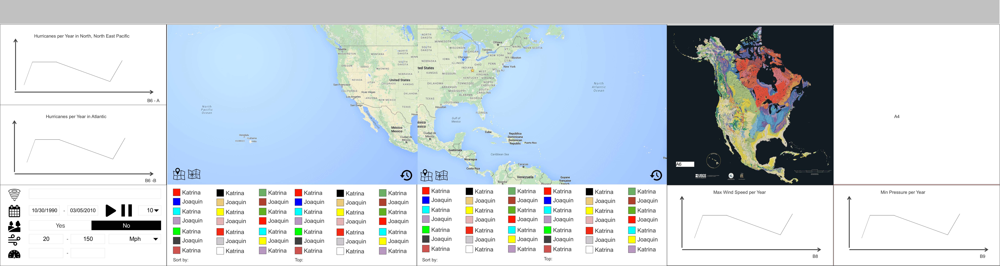

Shadows in the Rain
Shadows in the Raing is the second project in the CS424 (2015) course at UIC. This application will allow the user to track hurricanes paths on an interactive map and take a look at the different information obtained from the NHC dataset.
Frameworks & Libraries
-
D3JS: Javascript library for manipulating documents based on data.
-
Leaflet: Javascript library for working with interactive maps.
-
Mapbox: Map layers provider.
-
Bootstrap: CSS & HTML styles.
-
Crossfilter: Javascript library for exploring large datasets.
References
Code Samples
Application Code
You can download the sourcecode of this project from this link. Once downloaded, follow the instructions given below to run the application
Instructions
Initial Prototype
